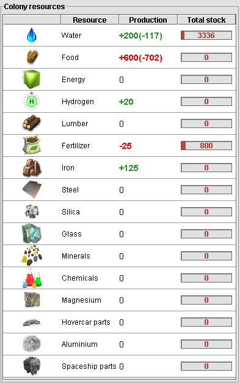

Colony resources
Colony resource production quantities and current storage amounts are
displayed in this panel. Resources that are being harvested or produced
are displayed with a "+" where resources that are being used are
displayed with a "-". If an essential resource like water or food is
being spent more than it is being produced, the production is displayed
in red.
